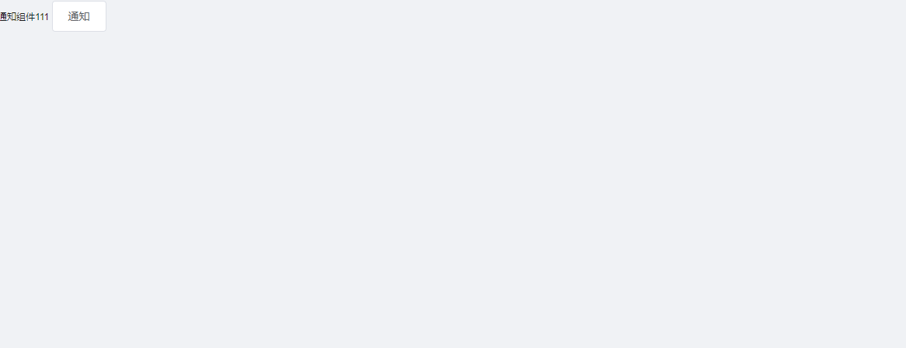

封装一个API调用行组件
封装一个API调用类型的组件
问题剖析
1 | 1.开发的时候遇到了一个问题,elementUI自带的Notification 通知组件 当通知内容过多的时候 会出现错乱 |
实现思路
1 | 1.首先我们需要有一个基础的组件 也就是 Notification 通知组件的静态版 这里就写我们组件文件.vue自己就可以扩展了 |
Notification组件静态版
1 | <template> |
继承静态版组件
1 | //首先声明这是一个js文件 然后我们引入Vue 用Vue的api去继承个组件 |
调用
1 | <template> |

1 | //效果如上 |


公告
感谢访问本站，如喜欢请收藏。本站主要分享前端知识，立志成为资深前端工程师，但目前是一个前端界的小学生 若喜欢可以打赏请博主喝一杯冰阔落
另外请大家多多支持淼哥的开源项目
https://github.com/flipped-aurora/gin-vue-admin
🌟🌟欢迎大家start 🌟🌟
欢迎加入博主的前端技术交流群